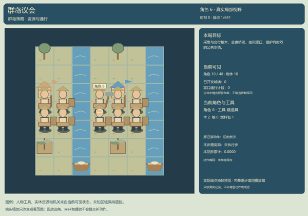
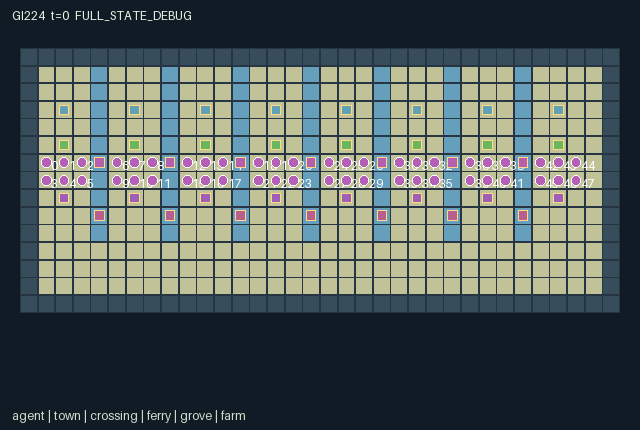

GI224 / SPATIAL
群岛议会 · Archipelago Councils
采集与交付粮木，合建桥梁、使用渡口，维护有时效的公共水情。
Original saved demonstration
Recorded native state, often authored scripts or interventions; information scope and failures are preserved in the original provenance. This is a saved demonstration, not live browser play.

Release verification episode
Untrained uniform legal actions. Actual JAX state sampled along the full original episode; full-state debug camera. No human performance or learning claim.

Run this game
crucibles play --game 224
Start Python locally, then open the address printed by the terminal. Installation, multiplayer, takeover and keyboard controls →
Objective, rewards & ending
Exact task contract
{
"objective": "Develop all eight towns through two timber and two grain deliveries each while negotiating shared transport and drainage.",
"natural_termination": "Natural completion when all eight towns have both delivery counters equal to 2; otherwise truncate at 640.",
"interaction": "A two-investment bridge opens a water cell to everyone but reduces downstream water without a canal. Ferries share finite fuel and cooldown; port stewards decide foreign access. Messengers broadcast local reef/tide readings with explicit age. A longer southern coast road bypasses these local dependencies.",
"observation_access": "Self fields and declared public counters/charts are exact. For each entity slot, visibility is active AND Chebyshev distance <= 3 from the role's current position; hidden slots have visible=0 and all values zero. Actor slots use the same radius. Patches cover dx,dy -3..3 in row-major order, outside=-1. Public static bounds, indexing and action meanings do not expose hidden current state. Legal masks are native affordance information; no renderer-only policy information. Human and policy actors use the same scalar action and transition."
}Declared per-step reward bounds: -1 to 5. Observability: partially_observable.
Rules
- 48 settlers in eight towns. Every actor moves and carries materials; tools change at the actor's own town.
- Two timber investments make a bridge walkable. A canal prevents its surge damage and downstream water diversion; each investment uses one carried timber.
- A ferry moves an actor across its two-cell channel. One shared fuel unit and cooldown are consumed; town owners can close their port to outsiders.
- At high tide a reef crossing requires a navigator; a failed crossing attempt stays in place. Any actor can refuel a ferry.
- A messenger spends a fuel pack to broadcast its town's reef/tide chart for 16 ticks. Charts are public and can become stale.
- A complete bridge is protected from collapse while occupied. Uncanalized construction can reduce the next town's seasonal farm renewal.
- Deliver two timber and two grain to each town for development. Aid rewards the beneficiary town and the delivering actor.
- Grove/farm renewal is bounded to eight cycles. Finite town fuel and the longer southern coastal road make local investment and reciprocal transport distinct choices.
Original mechanism document (historical status wording retained)
# Archipelago Councils Status: AUTHORED_NOT_EXECUTED. Initial proposal, attempt 00, feedback_used=0. All scripts are unexecuted source-derived hypotheses. Native interface: A=48, O=681, U=18, H=640. Every counted actor has a scalar int32 action and its own float32 observation/reward and bool done row. The family is civilization_strategy. Develop all eight towns through two timber and two grain deliveries each while negotiating shared transport and drainage. Reset samples seven binary reef flags from the supplied key; all other initial geometry/resources are deterministic. Signal publication reveals a deliberately chosen local reading, while arbitrary remote state remains hidden. Ferry entities are actual service-crossing locations with capacity/cooldown, not independently animated vessels. Town 7's chart reports crossing 6. Bridge safety checks preserve passability under occupants. Rules and physical meanings: - 48 settlers in eight towns. Every actor moves and carries materials; tools change at the actor's own town. - Two timber investments make a bridge walkable. A canal prevents its surge damage and downstream water diversion; each investment uses one carried timber. - A ferry moves an actor across its two-cell channel. One shared fuel unit and cooldown are consumed; town owners can close their port to outsiders. - At high tide a reef crossing requires a navigator; a failed crossing attempt stays in place. Any actor can refuel a ferry. - A messenger spends a fuel pack to broadcast its town's reef/tide chart for 16 ticks. Charts are public and can become stale. - A complete bridge is protected from collapse while occupied. Uncanalized construction can reduce the next town's seasonal farm renewal. - Deliver two timber and two grain to each town for development. Aid rewards the beneficiary town and the delivering actor. - Grove/farm renewal is bounded to eight cycles. Finite town fuel and the longer southern coastal road make local investment and reciprocal transport distinct choices. Transition order and controls: The native joint vector is processed in rotating actor order (k+t) modulo A. An actor checks its action against current state at its turn; a resource lost to an earlier actor converts the action to wait. Out-of-range input becomes wait. Nonterminal movement codes always allow facing even when walking is blocked; occupancy and terrain control actual movement. Ties for nearby targets choose minimum Manhattan distance, then lowest index. No direction action teleports through a blocked walking cell. All spatial updates, resources and tool effects are in candidate.py:L150-L196 (actor). Movement/collision is in candidate.py:L54-L65 (move_actor) and candidate.py:L125-L128 (passable). Exact contextual masks are in candidate.py:L130-L148 (choices); mask assembly is in candidate.py:L23-L25 (mask_row) and candidate.py:L27-L29 (legal_actions). The world updates production/ecology/hazards after actor actions. These delayed effects and reward components are in candidate.py:L198-L220 (raw_step). Rewards and finite bounds: Each capped timber/grain delivery gives beneficiary-town actors 0.8 and the delivering actor 0.3. First use of each ferry gives every actor 0.1. Bridge/canal investment, refueling or chart broadcast costs the acting actor 0.04. An uncanalized surge-exposed bridge costs downstream-town actors 0.2 even when occupancy temporarily protects the span. Four deliveries per town, seven first uses and one personal action bound reward within [-1,5]. No reward clipping. Observation entries are float32 in [-2,65536]. This loose finite envelope includes coordinates, codes, quantities and cumulative counters; at most A*H <= 49152 actor actions can contribute to a counter in one episode. It is a representational bound, never a performance threshold. Exact observation layout: - Columns [0,8): Self x,y,town,tool,wood,grain,fuel packs,face. Access: self. - Columns [8,28): t,tide phase,developed towns,used crossings; 8 chart codes; 8 chart ages. Chart code=3*reef+tide, -1 absent. Access: public. - Columns [28,412): 48 actor slots width 8: visible,x,y,town,tool,wood,grain,fuel packs. Access: local. - Columns [412,468): 8 town slots width 7: visible,x,y,timber delivered,grain delivered,fuel store,port access. Access: local. - Columns [468,503): 7 bridge slots width 5: visible,x,y,bridge level,canal. Access: local. - Columns [503,552): 7 ferry slots width 7: visible,x,y,fuel,cooldown,reef,ever used. Access: local. - Columns [552,592): 8 grove slots width 5: visible,x,y,timber stock,remaining renewals. Access: local. - Columns [592,632): 8 farm slots width 5: visible,x,y,grain stock,water. Access: local. - Columns [632,681): 7x7 base terrain patch y-major, outside=-1. Bridge entities override water passability at their cell when level 2. Access: local. Self fields and declared public counters/charts are exact. For each entity slot, visibility is active AND Chebyshev distance <= 3 from the role's current position; hidden slots have visible=0 and all values zero. Actor slots use the same radius. Patches cover dx,dy -3..3 in row-major order, outside=-1. Public static bounds, indexing and action meanings do not expose hidden current state. Legal masks are native affordance information; no renderer-only policy information. Human and policy actors use the same scalar action and transition. The observer construction is candidate.py:L222-L231 (observe). Entity/map masks are regenerated in candidate.py:L31-L40 (refresh). Masked entity flattening and patch boundaries are candidate.py:L42-L44 (visible_rows) and candidate.py:L46-L52 (patch). No role-view animation may expose hidden state or use full-state event arrays as public announcements. Only the declared public counters are scene events. Declared persistent state and invariants: Initial arrays, positions, resource stocks and integer/bool representations are defined in candidate.py:L79-L112 (reset). The manifest declares every reset key exactly once. Every state leaf keeps a fixed shape; positions are [x,y], maps are indexed [y,x], and all actors remain active through termination. Native actor positions are unique; non-agent objects may share a cell with an actor when the mechanic permits it. Analytical ranges used during author review: wood in [0,4]; grain in [0,4]; fuel_pack in [0,3]; bridge in [0,2]; ferry_fuel in [0,8]; cooldown in [0,4]; signal in [-1,5]; signal_age in [0,17]; water in [0,3]; timber_delivered in [0,2]; grain_delivered in [0,2]. These are source assertions awaiting independent native checking. Termination: Natural completion when all eight towns have both delivery counters equal to 2; otherwise truncate at 640. The terminal helper candidate.py:L67-L77 (end_step) increments t once for nonterminal input, gives natural completion priority over horizon truncation, and preserves all leaves and causes on already-terminal input with zero rewards. Joint dones agree with done_all. No reset occurs inside raw_step. Source-derived partner intervention: Build (10) versus wait (0), at the first branch step. Both branches then use the same build and westward movement actions. The branch-A bridge is intended to reach level 2 while branch B reaches level 1; the same actor 6 west action can then have different movement feasibility. No native transition was evaluated. The two full literal diagnostic scripts and both paired suffixes are in playthrough.json. They are dimension/range-checked as JSON only. Prefix and branch actions were chosen from rules, not searched, simulated or replayed. They are not a solvability, success-rate or causal-effect receipt. Presentation and provenance: The scene binds the exact source and manifest hashes, actual position/active/visibility leaves, tile map, actions and observed attributes. Crew index, actor identity, current tool and object state support later camera/actor selection. Scene metadata is delivered; native animation, RGB rendering and a human-play UI have not been executed or accepted. Any human control must call the same native transition as a policy. The sanitized authority and scope files govern these initial ordinals and current counts. Historical count examples are not applied. All input files are enumerated with bytes/SHA256 and truthful semantic-read scope in author_input_freeze.json. Five allowed official reference snapshots were hashed for integrity only; their contents were not used as design/code inputs. No upstream code or commercial art was copied. All small integer quantities use int32; no uint32 PRNG key is duplicated in state. Requested model configuration is gpt-6-astra/max; this author self-report does not establish provider model identity or token/cost telemetry. Evidence boundary: Only source AST screening, data-schema checking, symbolic observation-width accounting, reset-key coverage and literal-script structure checking were performed. No candidate was imported or executed; no JAX/numpy simulation, native reset/step, R0, eager/JIT/vmap comparison, benchmark, training, heldout evaluation, browser or downstream feedback was used. Intra-author static corrections to whitelist-rejected constructs occurred before this initial freeze and are recorded in generation_record.json. Native compatibility, replay legality, strategic richness, solvability, learning, UI quality and transfer remain unestablished.
Commands
Roles & abilities
agent_0 crew 0 / initial builder / actor 0
agent_1 crew 0 / initial farmer / actor 1
agent_2 crew 0 / initial navigator / actor 2
agent_3 crew 0 / initial messenger / actor 3
agent_4 crew 0 / initial steward / actor 4
agent_5 crew 0 / initial trader / actor 5
agent_6 crew 1 / initial builder / actor 6
agent_7 crew 1 / initial farmer / actor 7
agent_8 crew 1 / initial navigator / actor 8
agent_9 crew 1 / initial messenger / actor 9
agent_10 crew 1 / initial steward / actor 10
agent_11 crew 1 / initial trader / actor 11
agent_12 crew 2 / initial builder / actor 12
agent_13 crew 2 / initial farmer / actor 13
agent_14 crew 2 / initial navigator / actor 14
agent_15 crew 2 / initial messenger / actor 15
agent_16 crew 2 / initial steward / actor 16
agent_17 crew 2 / initial trader / actor 17
agent_18 crew 3 / initial builder / actor 18
agent_19 crew 3 / initial farmer / actor 19
agent_20 crew 3 / initial navigator / actor 20
agent_21 crew 3 / initial messenger / actor 21
agent_22 crew 3 / initial steward / actor 22
agent_23 crew 3 / initial trader / actor 23
agent_24 crew 4 / initial builder / actor 24
agent_25 crew 4 / initial farmer / actor 25
agent_26 crew 4 / initial navigator / actor 26
agent_27 crew 4 / initial messenger / actor 27
agent_28 crew 4 / initial steward / actor 28
agent_29 crew 4 / initial trader / actor 29
agent_30 crew 5 / initial builder / actor 30
agent_31 crew 5 / initial farmer / actor 31
agent_32 crew 5 / initial navigator / actor 32
agent_33 crew 5 / initial messenger / actor 33
agent_34 crew 5 / initial steward / actor 34
agent_35 crew 5 / initial trader / actor 35
agent_36 crew 6 / initial builder / actor 36
agent_37 crew 6 / initial farmer / actor 37
agent_38 crew 6 / initial navigator / actor 38
agent_39 crew 6 / initial messenger / actor 39
agent_40 crew 6 / initial steward / actor 40
agent_41 crew 6 / initial trader / actor 41
agent_42 crew 7 / initial builder / actor 42
agent_43 crew 7 / initial farmer / actor 43
agent_44 crew 7 / initial navigator / actor 44
agent_45 crew 7 / initial messenger / actor 45
agent_46 crew 7 / initial steward / actor 46
agent_47 crew 7 / initial trader / actor 47
Observation permissions
Training receives only the original observation rows. Role cameras use declared visibility; debug cameras are explicitly marked. Local benchmark records log debug exposure and role takeover history.
Exact observation layout
[
{
"slice": [
0,
8
],
"meaning": "Self x,y,town,tool,wood,grain,fuel packs,face.",
"visibility": "self"
},
{
"slice": [
8,
28
],
"meaning": "t,tide phase,developed towns,used crossings; 8 chart codes; 8 chart ages. Chart code=3*reef+tide, -1 absent.",
"visibility": "public"
},
{
"slice": [
28,
412
],
"meaning": "48 actor slots width 8: visible,x,y,town,tool,wood,grain,fuel packs.",
"visibility": "local"
},
{
"slice": [
412,
468
],
"meaning": "8 town slots width 7: visible,x,y,timber delivered,grain delivered,fuel store,port access.",
"visibility": "local"
},
{
"slice": [
468,
503
],
"meaning": "7 bridge slots width 5: visible,x,y,bridge level,canal.",
"visibility": "local"
},
{
"slice": [
503,
552
],
"meaning": "7 ferry slots width 7: visible,x,y,fuel,cooldown,reef,ever used.",
"visibility": "local"
},
{
"slice": [
552,
592
],
"meaning": "8 grove slots width 5: visible,x,y,timber stock,remaining renewals.",
"visibility": "local"
},
{
"slice": [
592,
632
],
"meaning": "8 farm slots width 5: visible,x,y,grain stock,water.",
"visibility": "local"
},
{
"slice": [
632,
681
],
"meaning": "7x7 base terrain patch y-major, outside=-1. Bridge entities override water passability at their cell when level 2.",
"visibility": "local"
}
]Entity visibility & attributes
[
{
"id": "agent",
"kind": "agent",
"count": 48,
"position": [
"pos"
],
"active": [
"agent_active"
],
"visibility": [
"agent_visible"
],
"attributes": [
{
"state_path": [
"crew"
],
"meaning": "Native crew index",
"display": "category"
},
{
"state_path": [
"tool"
],
"meaning": "Current tool code",
"display": "category"
},
{
"state_path": [
"wood"
],
"meaning": "Carried timber units",
"display": "number"
},
{
"state_path": [
"grain"
],
"meaning": "Carried grain units",
"display": "number"
},
{
"state_path": [
"fuel_pack"
],
"meaning": "Carried fuel packs",
"display": "number"
}
]
},
{
"id": "town",
"kind": "landmark",
"count": 8,
"position": [
"town_pos"
],
"active": [
"town_active"
],
"visibility": [
"town_visible"
],
"attributes": [
{
"state_path": [
"timber_delivered"
],
"meaning": "Development timber delivered, capped at two",
"display": "number"
},
{
"state_path": [
"grain_delivered"
],
"meaning": "Development grain delivered, capped at two",
"display": "number"
},
{
"state_path": [
"fuel_store"
],
"meaning": "Finite town fuel stock",
"display": "number"
},
{
"state_path": [
"open_port"
],
"meaning": "Foreign actors permitted at owned ferry",
"display": "flag"
}
]
},
{
"id": "crossing",
"kind": "gate",
"count": 7,
"position": [
"crossing_pos"
],
"active": [
"crossing_active"
],
"visibility": [
"crossing_visible"
],
"attributes": [
{
"state_path": [
"bridge"
],
"meaning": "Bridge construction level; two is walkable",
"display": "number"
},
{
"state_path": [
"canal"
],
"meaning": "Drainage canal installed",
"display": "flag"
}
]
},
{
"id": "ferry",
"kind": "gate",
"count": 7,
"position": [
"ferry_pos"
],
"active": [
"ferry_active"
],
"visibility": [
"ferry_visible"
],
"attributes": [
{
"state_path": [
"ferry_fuel"
],
"meaning": "Ferry fuel available",
"display": "number"
},
{
"state_path": [
"cooldown"
],
"meaning": "Ferry service cooldown ticks",
"display": "number"
},
{
"state_path": [
"reef"
],
"meaning": "Local binary reef hazard",
"display": "number"
},
{
"state_path": [
"used_crossing"
],
"meaning": "Ferry has been used",
"display": "flag"
}
]
},
{
"id": "grove",
"kind": "resource",
"count": 8,
"position": [
"grove_pos"
],
"active": [
"grove_active"
],
"visibility": [
"grove_visible"
],
"attributes": [
{
"state_path": [
"timber_stock"
],
"meaning": "Harvestable timber units",
"display": "number"
},
{
"state_path": [
"renewals"
],
"meaning": "Resource renewal cycles remaining",
"display": "number"
}
]
},
{
"id": "farm",
"kind": "resource",
"count": 8,
"position": [
"farm_pos"
],
"active": [
"farm_active"
],
"visibility": [
"farm_visible"
],
"attributes": [
{
"state_path": [
"grain_stock"
],
"meaning": "Harvestable grain units",
"display": "number"
},
{
"state_path": [
"water"
],
"meaning": "Farm seasonal water allowance",
"display": "number"
}
]
}
]Actual verification & provenance
Per-game execution receipt
{
"game": "gi224",
"status": "PASS",
"verification_revision": 2,
"source_sha256": "197db96ab84b89e440a2d4e381d2eb42dcfc37140913d3b7374a84f46694bd4b",
"seed": 20261101,
"runtime": {
"jax": "0.4.38",
"numpy": "1.26.4",
"devices": [
"TFRT_CPU_0"
]
},
"dimensions": {
"num_agents": 48,
"observation_size": 681,
"num_actions": 18,
"max_steps": 640
},
"checks": {
"eager_reset": {
"status": "PASS",
"seconds": 3.390909433364868
},
"observation_spaces_legal_masks": {
"status": "PASS",
"seconds": 0.6088194847106934
},
"eager_step": {
"status": "PASS",
"seconds": 2.4505326747894287
},
"jit_reset": {
"status": "PASS",
"seconds": 0.5502030849456787
},
"jit_step": {
"status": "PASS",
"seconds": 1.389833927154541
},
"eager_jit_integer_parity_float_measurement": {
"status": "PASS",
"seconds": 0.0037178993225097656
},
"jit_vmap_reset": {
"status": "PASS",
"seconds": 0.6984145641326904
},
"jit_vmap_step": {
"status": "PASS",
"seconds": 2.42275071144104
},
"outer_autoreset_api": {
"status": "PASS",
"seconds": 2.6220450401306152
},
"full_original_horizon_episode_and_render": {
"status": "PASS",
"seconds": 4.046106815338135
}
},
"human_scores": null,
"browser_controls": "PENDING",
"failures": [],
"elapsed_seconds": 19.029678106307983,
"float_parity_max_abs": 0.0,
"numerical_parity": "EXACT",
"raw_terminal_absorbing": "PASS",
"terminal_outer_reset": "PASS",
"episode_steps": 640,
"scripted_random_returns": [
4.120000071823597,
4.340000085532665,
4.080000072717667,
3.820000059902668,
3.820000059902668,
3.820000059902668,
2.7000000700354576,
3.460000090301037,
3.200000077486038,
2.860000066459179,
2.7800000682473183,
2.8200000673532486,
3.6600000858306885,
4.380000106990337,
3.86000008136034,
3.700000084936619,
3.82000008225441,
3.86000008136034,
4.980000130832195,
4.120000094175339,
3.9000000804662704,
3.86000008136034,
3.86000008136034,
3.740000084042549,
3.6600000634789467,
4.420000106096268,
4.080000095069408,
3.7800000831484795,
3.82000008225441,
4.300000108778477,
3.340000055730343,
3.800000064074993,
3.760000064969063,
3.4200000539422035,
3.380000054836273,
3.460000053048134,
4.380000106990337,
4.160000093281269,
4.040000095963478,
3.82000008225441,
4.460000105202198,
3.8600000590085983,
3.700000062584877,
4.080000072717667,
3.9000000581145287,
3.820000059902668,
4.380000084638596,
4.040000073611736
],
"terminal": true,
"demo_information": "FULL_STATE_DEBUG",
"demo_frames": 26,
"render_roles_checked": 48
}Chromium control verification
{
"status": "PENDING"
}Original identity and file hashes
{
"id": 224,
"key": "gi224",
"title": "群岛议会 · Archipelago Councils",
"summary": "采集与交付粮木，合建桥梁、使用渡口，维护有时效的公共水情。",
"tags": [
"领土策略",
"48角色"
],
"family": "spatial",
"dimensions": {
"num_agents": 48,
"observation_size": 681,
"num_actions": 18,
"max_steps": 640
},
"source_sha256": "197db96ab84b89e440a2d4e381d2eb42dcfc37140913d3b7374a84f46694bd4b",
"manifest_sha256": "f0afae6b42dcf98a1c05d8ddd711fab0648650dad78681d8a2fe7ce97c5971ec",
"files": [
{
"file": "candidate.py",
"sha256": "197db96ab84b89e440a2d4e381d2eb42dcfc37140913d3b7374a84f46694bd4b",
"bytes": 15371,
"origin": "work/exp_2/game_incubator_v3/community_games222_225_visualization_root222_v1/native154_candidate/registry/v2/games/game-v3-00224/candidate.py"
},
{
"file": "manifest.json",
"sha256": "f0afae6b42dcf98a1c05d8ddd711fab0648650dad78681d8a2fe7ce97c5971ec",
"bytes": 22560,
"origin": "work/exp_2/game_incubator_v3/community_games222_225_visualization_root222_v1/native154_candidate/registry/v2/games/game-v3-00224/manifest.json"
},
{
"file": "scene.json",
"sha256": "51166c8cc54131d77d36db33ae40b0dbef08cd1a9f13344929f301aa9f14a41e",
"bytes": 8936,
"origin": "work/exp_2/game_incubator_v3/community_games222_225_visualization_root222_v1/native154_candidate/registry/v2/games/game-v3-00224/scene.json"
},
{
"file": "mechanism.md",
"sha256": "2024a9a37accd4edf5e70b63984d301582cc4eb0b0588468b12e069c51992fc2",
"bytes": 9397,
"origin": "work/exp_2/game_incubator_v3/sources/game-v3-00224/attempt_00/mechanism.md"
},
{
"file": "playthrough.json",
"sha256": "1af9f91ba5904c0c1f5cae776079ec63f201294da9396faae46d39e2930bfd2d",
"bytes": 18713,
"origin": "work/exp_2/game_incubator_v3/sources/game-v3-00224/attempt_00/playthrough.json"
}
],
"original_status": "NATIVE154_REFERENCE",
"original_saved_replay": true,
"release_validation": "PASS",
"human_scores": null,
"browser_validation": "PENDING"
}